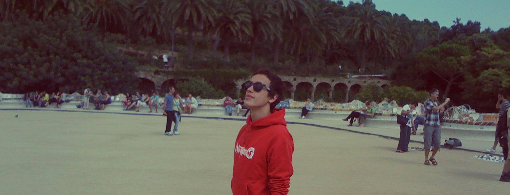
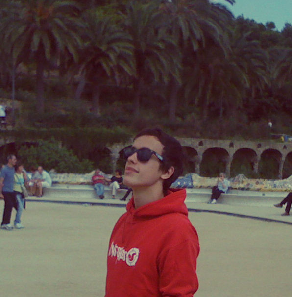

I've been employed at Siemens Ltd. in Zug, Switzerland since August 2014. During the first two years as a Technical Apprentice I was responsible for the integration of our CPQ system into Salesforce — this includes software development of Jasper Reports with Java, and HTML/CSS manipulation on Octiv. From 2016 to 2018 I worked as a Software Engineer analyzing server logs, troubleshooting APIs and running automated tests on our systems. Due to my history with the project I gave third-level support for our front-end solutions, and consulted key-customers regarding requests for new features.
In 2018 I joined the Datamart team as a Test Engineer. In this role I've been developing JavaScript-based web applications to monitor the code quality of our products. Although this role has been a very fulfilling experience, I am now looking for a full-on Software Engineer job to complement my part-time studies in Information Science.
I've been employed at Siemens Ltd. in Zug, Switzerland since August 2014. During the first two years as a Technical Apprentice I was responsible for the integration of our CPQ system into Salesforce — this includes software development of Jasper Reports with Java, and HTML/CSS manipulation on Octiv. From 2016 to 2018 I worked as a Software Engineer analyzing server logs, troubleshooting APIs and running automated tests on our systems. Due to my history with the project I gave third-level support for our front-end solutions, and consulted key-customers regarding requests for new features.
In 2018 I joined the Datamart team as a Test Engineer. In this role I've been developing JavaScript-based web applications to monitor the code quality of our products. Although this role has been a very fulfilling experience, I am now looking for a full-on Software Engineer job to complement my part-time studies in Information Science.
Wherever I go I connect with people. I enjoy engaging with culture when travelling and I like learning new languages. I have a special interest in mystery and solving riddles. Having read a lot of Science Fiction growing up I have established a talent for solving technological problems.
I love brainstorming about projects. My dream is to build technology that enables people to improve themselves step-by-step. That’s why I’m working on an React app focussed on data-driven decision making. I see knowledge as the ultimate goal. The more we understand the fewer mistakes we make.
It’s easy for me to evaluate and reassess priorities. I like to jump into action and fail fast. This way I can analyze the results and research better methods to achieve my goals.
Carmel Hill, Barcelona
Wherever I go I connect with people. I enjoy engaging with culture when travelling and I like learning new languages. I have a special interest in mystery and solving riddles. Having read a lot of Science Fiction growing up I have established a talent for solving technological problems.
I love brainstorming about projects. My dream is to build technology that enables people to improve themselves step-by-step. That’s why I’m working on an React Native app focussed on physical health and personal finance. I see knowledge as the ultimate goal. The more we understand the fewer mistakes we make.
It’s easy for me to evaluate and reassess priorities. I like to jump into action and fail fast. This way I can analyze the results and research better methods to achieve my goals.
Carmel Hill, Barcelona